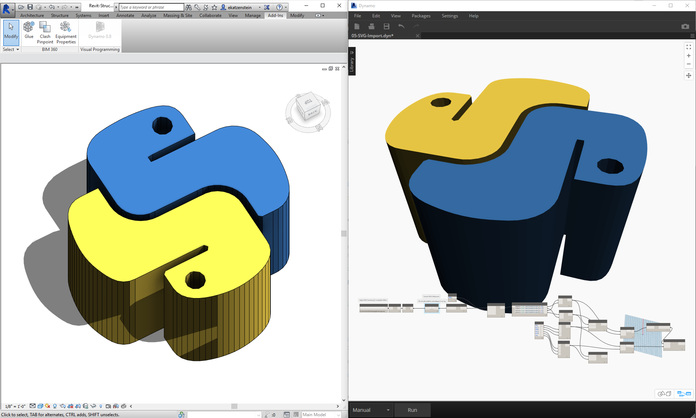

Python 與 Revit
現在我們已經演示了如何在 Dynamo 中使用 Python 腳本，接下來瞭解將 Revit 資源庫連接至腳本環境。請記住，我們已匯入 Dynamo 核心節點 (含以下程式碼塊的前三行)。若要匯入 Revit 節點、Revit 元素及 Revit 文件管理員，我們只需再加入幾行程式碼：
import clr
clr.AddReference('ProtoGeometry')
from Autodesk.DesignScript.Geometry import *
# Import RevitNodes
clr.AddReference("RevitNodes")
import Revit
# Import Revit elements
from Revit.Elements import *
# Import DocumentManager
clr.AddReference("RevitServices")
import RevitServices
from RevitServices.Persistence import DocumentManager
import System
這會提供 Revit API 的存取權，以及適用於 Revit 工作的自訂腳本。透過合併視覺程式設計程序與 Revit API 腳本，將大幅改進協同合作與工具開發。例如，BIM 管理員與線路圖設計者可以針對同一圖表進行合作。透過這種協同合作，他們可以改善模型的設計與執行。

平台特定 API
Dynamo 專案的潛在宗旨是拓寬平台的實作範圍。隨著 Dynamo 加入更多程式至事項表，使用者可以從 Python 腳本環境存取平台特定 API。雖然在本節中只是對 Revit 進行案例研究，但我們可以預期在將來的更多章節中，會針對在其他平台中編寫腳本提供全面的自學課程。此外，現在還可以存取許多 IronPython 資源庫，可將這些資源庫匯入至 Dynamo！
以下範例展示了使用 Python 從 Dynamo 實作 Revit 特定作業的方式。若要更詳細地檢閱 Python 與 Dynamo 及 Revit 之間的關係，請參閱 Dynamo Wiki 頁面。Python 與 Revit 的另一項有用資源是 Revit Python Shell 專案。
練習 01
建立新的 Revit 專案。下載此練習隨附的範例檔案 (按一下右鍵，然後按一下「連結另存為...」)。附錄中提供範例檔案的完整清單。Revit-Doc.dyn
在以下練習中，我們將探索 Dynamo for Revit 中的基本 Python 腳本。此練習重點是處理 Revit 檔案及元素，以及 Revit 與 Dynamo 之間的通訊。

這是對連結至 Dynamo 階段作業的 Revit 檔案擷取 doc、uiapp 及 app 的現成方法。先前使用 Revit API 的程式設計人員可能會注意到觀看清單中的項目。如果對這些項目不熟悉，沒有問題，我們會在以下練習中使用其他範例。
以下將講述在 Dynamo 中如何匯入 Revit 服務及擷取文件資料：
看一下 Dynamo 中的 Python 節點。註釋的程式碼如下。
# Enable Python support and load DesignScript library
import clr
# Import DocumentManager
clr.AddReference("RevitServices")
import RevitServices
from RevitServices.Persistence import DocumentManager
# Place your code below this line
doc = DocumentManager.Instance.CurrentDBDocument
uiapp = DocumentManager.Instance.CurrentUIApplication
app = uiapp.Application
# Assign your output to the OUT variable.
OUT = [doc,uiapp,app]
練習 02
下載此練習隨附的範例檔案 (按一下右鍵，然後按一下「連結另存為...」)。附錄中提供範例檔案的完整清單。Revit-ReferenceCurve.dyn
在本練習中，我們將在 Revit 內使用 Dynamo Python 節點建立簡單的模型曲線。

從使用以上影像中的一組節點開始。我們先在 Revit 中使用 Dynamo 節點建立兩個參考點。
首先，在 Revit 中建立新的概念量體族群。啟動 Dynamo，然後建立以上影像中的一組節點。我們先在 Revit 中使用 Dynamo 節點建立兩個參考點。
- 建立程式碼塊，並為其賦值「0;」。
- 將此值插入至 ReferencePoint.ByCoordinates 節點做為 X、Y 與 Z 輸入。
- 建立三個滑棒，讓其範圍介於 -100 與 100 之間，且步長大小為 1。
- 將每個滑棒連接至 ReferencePoint.ByCoordinates 節點。
- 加入 Python 節點至工作區，按一下節點上的「+」按鈕以加入另一個輸入，然後將兩個參考點插入至每個輸入。開啟 Python 節點。

看一下 Dynamo 中的 Python 節點。註釋的程式碼如下。
- System.Array：Revit 需要系統陣列做為輸入 (而非 Python 清單)。這只是又一行程式碼，但請注意引數類型將為 Revit 中的 Python 程式設計提供便利。
import clr
# Import RevitNodes
clr.AddReference("RevitNodes")
import Revit
# Import Revit elements
from Revit.Elements import *
import System
#define inputs
startRefPt = IN[0]
endRefPt = IN[1]
#define system array to match with required inputs
refPtArray = System.Array[ReferencePoint]([startRefPt, endRefPt])
#create curve by reference points in Revit
OUT = CurveByPoints.ByReferencePoints(refPtArray)

我們已從 Dynamo 使用 Python 建立直線連接的兩個參考點。接下來在下一個練習中更進一步。
練習 03
下載並解壓縮此練習隨附的範例檔案 (按一下右鍵，然後按一下「連結另存為...」)。附錄中提供範例檔案的完整清單。Revit-StructuralFraming.zip
此練習仍很簡單，但講述了在 Revit 與 Dynamo 之間連接資料與幾何圖形的主題。我們從開啟 Revit-StructuralFraming.rvt 開始。開啟後，載入 Dynamo，並開啟檔案 Revit-StructuralFraming.dyn。

此 Revit 檔案是基本檔案。兩條參考曲線：一條繪製在 Level 1 上，另一條繪製在 Level 2 上。我們要將這些曲線匯入 Dynamo 並保持即時連結。

在此檔案中，我們將一組節點插入至 Python 節點的五個輸入。
- Select Model Element Nodes：按一下每個輸入的選取按鈕，然後選取 Revit 中的對應曲線。
- Code Block：使用語法 "0..1..#x;"，將介於 0 與 20 之間的整數滑棒連接至 x 輸入。此作業會指定將在兩條曲線之間繪製樑的數量。
- Structural Framing Types：在此我們將從下拉式功能表中選擇預設的 W12x26 樑。
- Levels：選取「Level 1」。

此 Python 程式碼稍多一些，但程式碼中的註釋描述了程序的狀況：
import clr
#import Dynamo Geometry
clr.AddReference('ProtoGeometry')
from Autodesk.DesignScript.Geometry import *
# Import RevitNodes
clr.AddReference("RevitNodes")
import Revit
# Import Revit elements
from Revit.Elements import *
import System
#Query Revit elements and convert them to Dynamo Curves
crvA=IN[0].Curves[0]
crvB=IN[1].Curves[0]
#Define input Parameters
framingType=IN[3]
designLevel=IN[4]
#Define "out" as a list
OUT=[]
for val in IN[2]:
#Define Dynamo Points on each curve
ptA=Curve.PointAtParameter(crvA,val)
ptB=Curve.PointAtParameter(crvB,val)
#Create Dynamo line
beamCrv=Line.ByStartPointEndPoint(ptA,ptB)
#create Revit Element from Dynamo Curves
beam = StructuralFraming.BeamByCurve(beamCrv,designLevel,framingType)
#convert Revit Element into list of Dynamo Surfaces
OUT.append(beam.Faces)

在 Revit 中，我們將建立做為結構元素跨越兩條曲線的樑陣列。注意事項：這不是真實範例...結構元素用做從 Dynamo 所建立原生 Revit 例證的範例。
在 Dynamo 中也可以看到結果。Watch3D 節點中的樑是指從 Revit 元素查詢的幾何圖形。
請注意，我們可以採用連續的程序，將資料從 Revit 環境平移至 Dynamo 環境。總之，程序的工作方式如下：
- 選取 Revit 元素
- 將 Revit 元素轉換為 Dynamo 曲線
- 將 Dynamo 曲線分割為一系列 Dynamo 點
- 使用兩條曲線之間的 Dynamo 點建立 Dynamo 線
- 透過參考 Dynamo 線建立 Revit 樑
- 透過查詢 Revit 樑的幾何圖形，輸出 Dynamo 曲面
這聽上去可能有點笨拙，但腳本可讓該作業非常簡單，只需在 Revit 中編輯曲線並重新執行解析器即可 (雖然在執行此作業時，您可能不得不刪除先前的樑)。這是因為我們是以 Python 放置樑，因此破壞了 OOTB 節點所擁有的關聯。

在 Revit 中更新參考曲線後，我們將取得新的樑陣列。